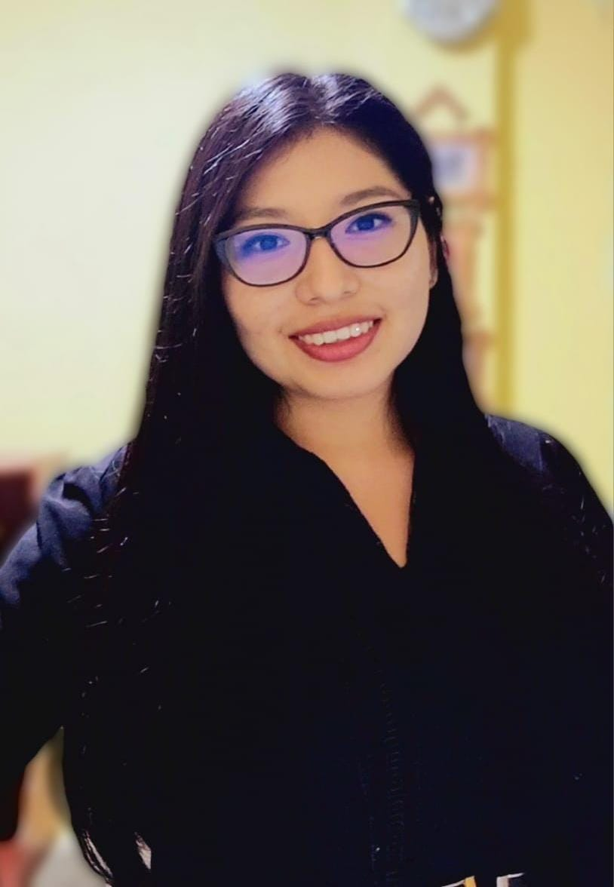

Joselyn Rodriguez | WDD 130
Hello! My name is Joselyn Rodriguez, and I am from Lima, Peru. I'm 25 years old. I'm studying Software Development at BYU-Idaho. I enjoy reading, listening to music, dancing, and learning new languages. I also love pets and especially cats. I have a female cat named Tata and a female dog named Layca. I'm currently studying Chinese. This is a beautiful language, but it is very difficult. It requires a lot of practice and consistency, as in Software Development. I love technology and computers because they open new opportunities for us.